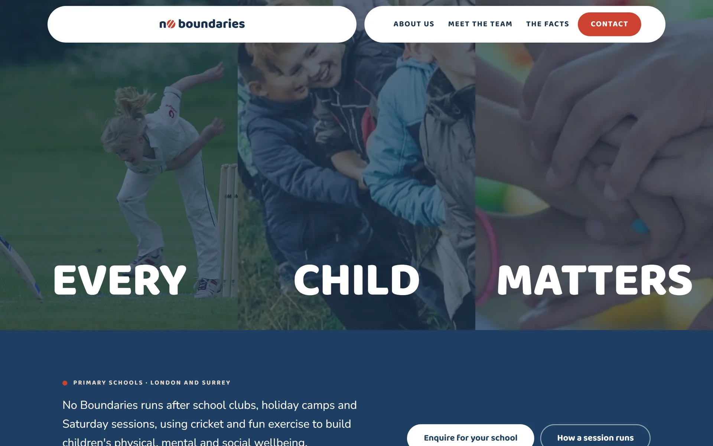
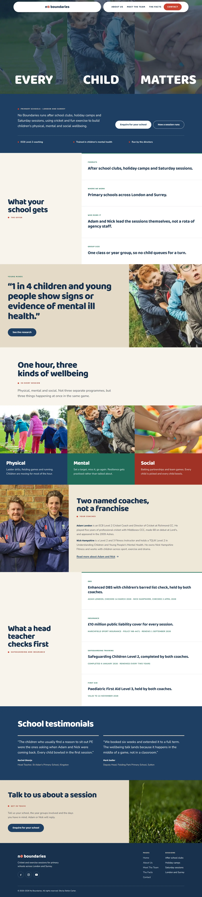
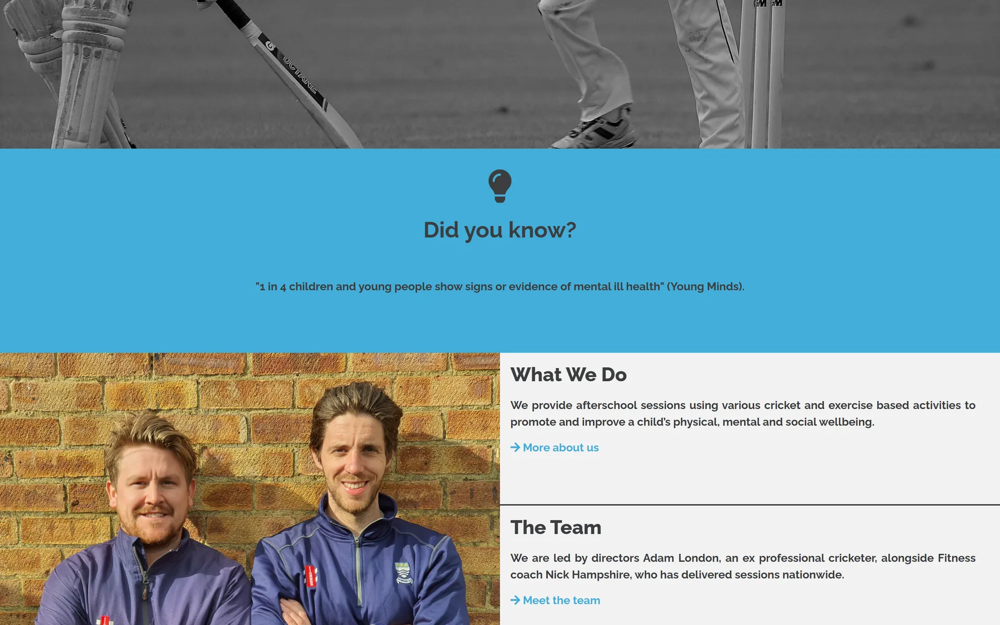
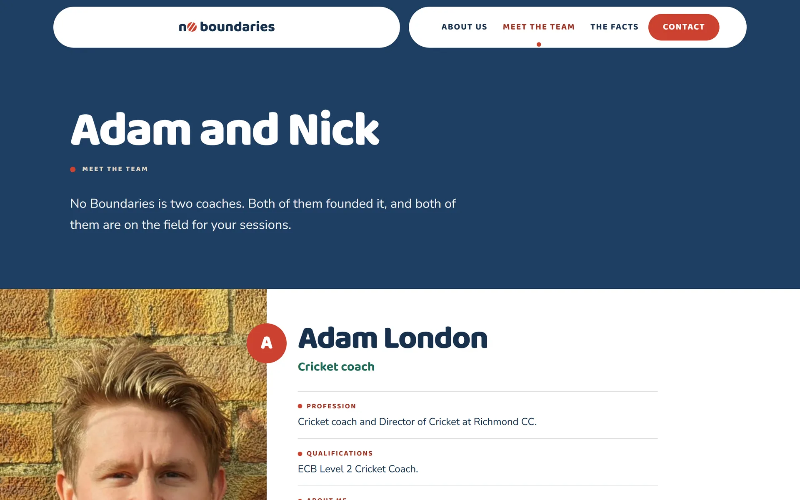
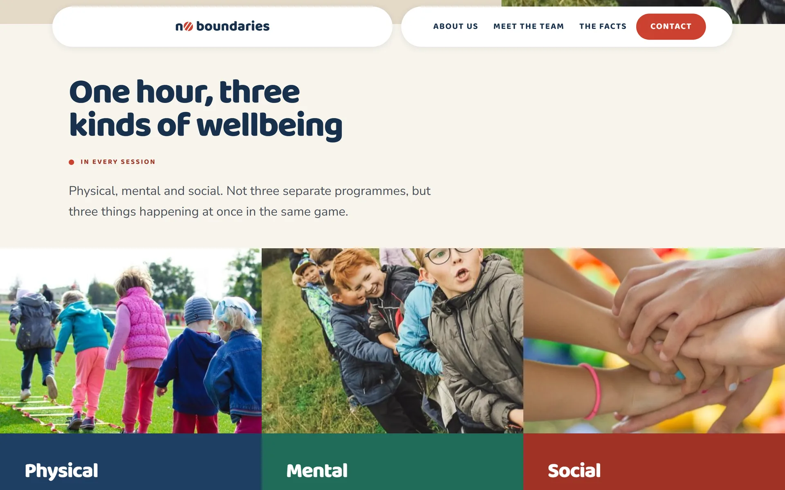
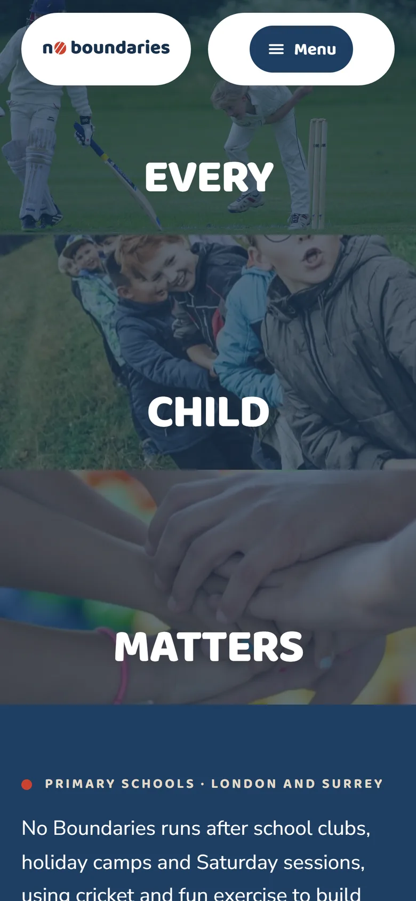
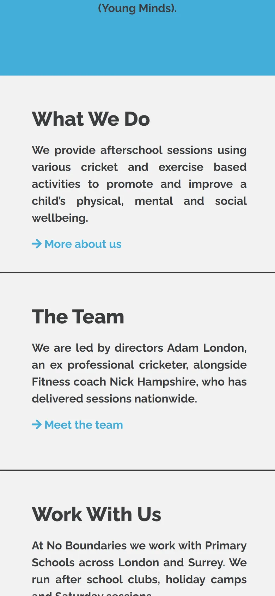
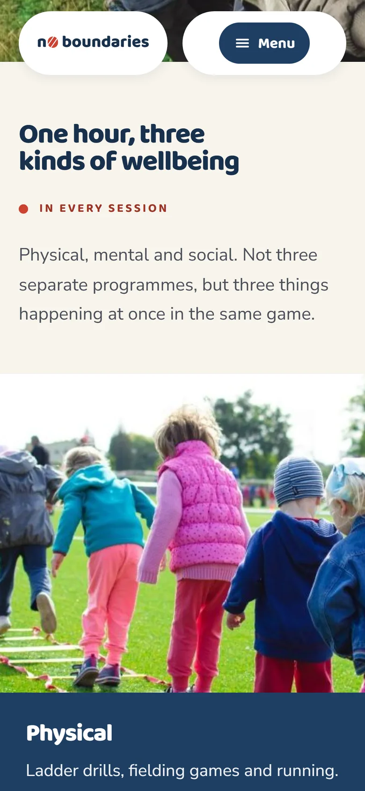

Web Design — 2024
No Boundaries
Balancing children’s wellbeing through cricket and exercise — for primary schools across London and Surrey.

01 — Overview
The brief
No Boundaries runs cricket-and-exercise sessions that support children’s wellbeing. The website has to speak to three audiences at once — schools booking sessions, funders backing the programme and parents wondering what their child will actually do — without losing its warmth.
The programme was founded by ex-professional cricketer Adam London alongside fitness coach Nick Hampshire, running afterschool clubs, holiday camps and Saturday sessions for primary schools across London and Surrey. The site opens with the same photography as the sessions themselves — black-and-white cricket action lifted by one line of blue headline — then earns trust a fact at a time before explaining what a session looks like.
02 — The challenge
What was in the way
The team knew exactly where the old site fell short:
- Visitors could not tell within seconds what a No Boundaries session actually looks like.
- Three audiences — schools, funders and parents — needed three different next steps from one homepage.
- The credibility case (mental-health and obesity statistics) was easy to skim straight past.
03 — The approach
How we got there
-
Lead with the sessions
Real black-and-white action photography of kids playing cricket opens every key page, so the programme looks like what it is.
-
Earn trust in small doses
A repeating “Did you know?” band breaks up the page with one statistic at a time, instead of a wall of research.
-
Three doors, one homepage
What We Do, The Team and Work With Us sit side by side, so a parent, a funder and a school head each find their own next step.
-
One story, three pillars
Physical, Mental and Social Wellbeing frame everything the programme does, repeated from the homepage through to The Facts.
04 — On screen
The site, up close
Black-and-white photography, one sky-blue headline and a coral accent for the details that matter — the same palette carries every page, from the homepage to the sign-up form.







05 — The outcome
What it delivered
The site now works as the programme’s best advocate — clear enough for a teacher’s five-minute break, credible enough for a funding board.
Teachers tell us the website was what convinced them — it feels like the sessions do.